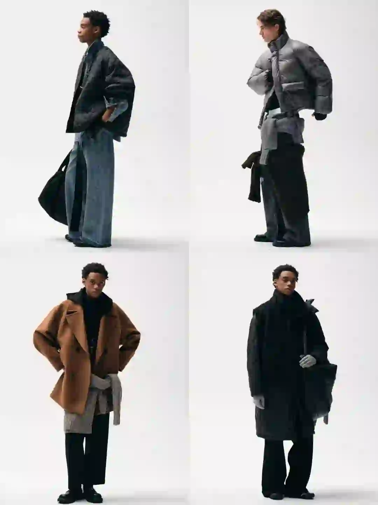
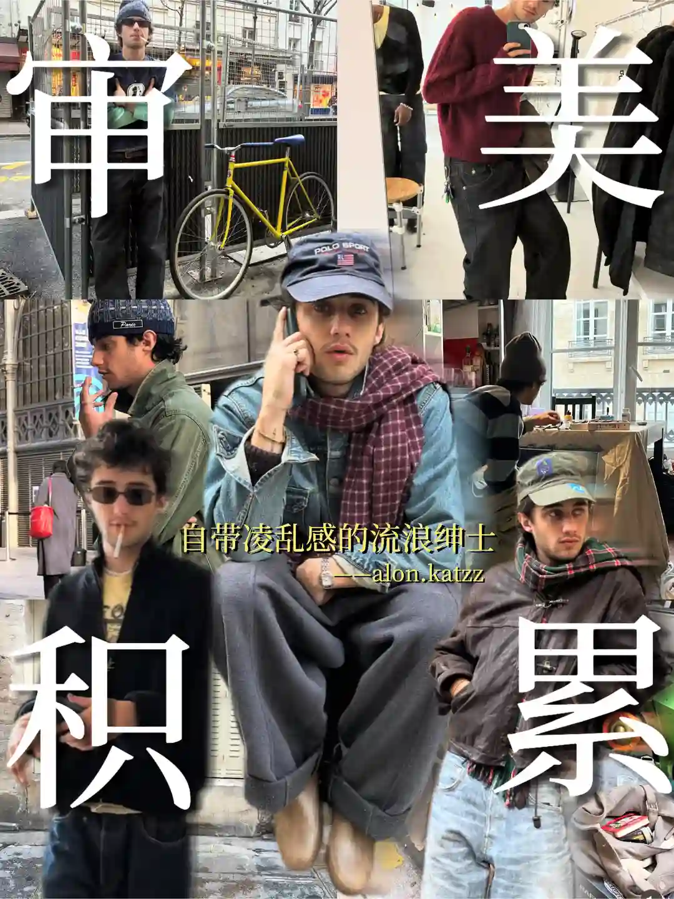
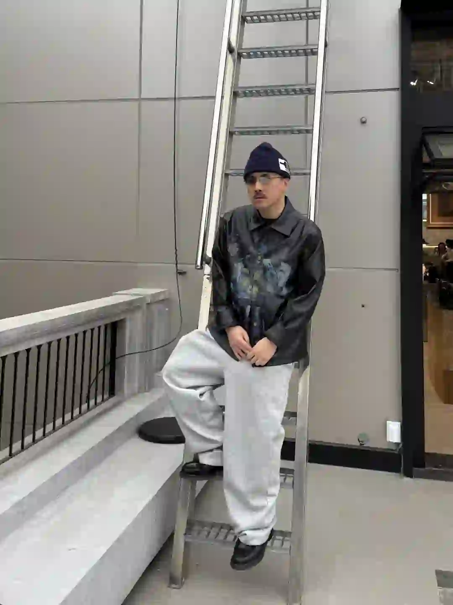

2026年5月14日
05月14日报告
生成时间：2026-05-14 · 范围：时尚 / 穿搭 / 网球
今日参考账号：陈赫 / 负像之诗 / 审美提升
今日高信号标题：时尚这一块 安姐有自己的见解 ｜ 100位宝藏摄影大师 | jorgemchagas ｜ 每天认识一位摄影师DAY204Helena Georgiou
竞品策略变化：未命中监控竞品样本
今日高信号标题：时尚这一块 安姐有自己的见解 ｜ 100位宝藏摄影大师 | jorgemchagas ｜ 每天认识一位摄影师DAY204Helena Georgiou
竞品策略变化：未命中监控竞品样本

时尚 · 01
时尚这一块 安姐有自己的见解
⭐ 1927
👍 34982
今天可学
- 内容结构：视频封面 + 视频，更像视频示范/单点表达
- 点赞高于收藏，偏流量型曝光内容，不值得原样照抄
- 标签聚焦：#ootd

时尚 · 02
100位宝藏摄影大师 | jorgemchagas
⭐ 974
👍 4017
今天可学
- 内容结构：人物 + 4图，更像单点表达
- 收藏效率高，说明用户把它当成可复用模板/知识卡，不只是刷到即过
- 评论活跃，适合加入观点冲突、对比案例或常见误区来拉讨论
- 正文入口：英国摄影师📷jorgemchagas jorgemchagas以极简光影与剪影构建城市叙事，车站、街头的孤独身影与建筑线条交织，动态模糊与反射构图传递静谧哲思。 “在流动的瞬间里，…
- 标签聚焦：#拍出电影感 / #一张照片高级感 / #笔记灵感 / #人文扫街
时尚 · 03
每天认识一位摄影师DAY204Helena Georgiou
⭐ 869
👍 2351
今天可学
- 内容结构：文字卡 + 9图，更像资料型合集
- 收藏效率高，说明用户把它当成可复用模板/知识卡，不只是刷到即过
- 评论活跃，适合加入观点冲突、对比案例或常见误区来拉讨论
- 正文入口：📸 Helena Georgiou | 极简光影诗人，用黑白诉说日常的高级感！ 🌫️ 风格解码 1. 极致简约美学 以黑白摄影闻名，剥离色彩干扰，用强烈明暗对比和细腻灰度突出线条与…
- 标签聚焦：#审美提升 / #摄影审美 / #ins摄影师推荐 / #摄影审美累积

时尚 · 04
“秀场积累”Emporio Armani 26秋冬时装秀
⭐ 714
👍 1334
今天可学
- 内容结构：人物 + 9图，更像资料型合集
- 这条流量带有明显外部加成，只拆内容结构与包装，不原样复制流量来源
- 正文入口：Emporio Armani 2026秋冬系列再现米兰式优雅。本季以标志性“夜空蓝”与“高级灰”为主调，为都市男女织就了一场“静奢”的冬日梦境。 褪去刻板的权力套装，大秀聚焦剪裁温…
- 标签聚焦：#小红书时装周群聊 / #每天一个穿搭灵感 / #RedFaceOfFashion100 / #审美提升

时尚 · 05
为NANS搭配的一组形象片
⭐ 542
👍 994
今天可学
- 内容结构：人物 + 9图，更像资料型合集
- 收藏效率高，说明用户把它当成可复用模板/知识卡，不只是刷到即过
- 评论活跃，适合加入观点冲突、对比案例或常见误区来拉讨论
- 标签聚焦：#秋冬男装 / #男士外套 / #lookbook拍摄 / #广州搭配师
时尚赛道今日方法论
- 样本依据：100位宝藏摄影大师 | jorgemchagas / 每天认识一位摄影师DAY204Helena Georgiou
- 当天结构信号：人物封面 + 9图 最强；优先学习样本 3 条，低收藏流量样本 1 条。
- 时尚赛道今天跑出来的是“审美判断 + 资料感整理”：像 为NANS搭配的一组形象片 这类高收藏样本，核心不是讲步骤，而是把趋势、风格线索和案例并排给足，用户才愿意以 54.5% 的收藏率反复回看。
- 执行建议：标题先抛出趋势/风格判断，再给明确收益；正文少讲空泛氛围，多给风格标签、对照案例和可复看的视觉结论，让内容更像灵感资料卡。
- 反例提醒：时尚这一块 安姐有自己的见解 点赞高但收藏低，说明这类曝光型内容能带流量，不适合直接当明日主打法。
- 风险提醒：“秀场积累”Emporio Armani 26秋冬时装秀 已标记为 [不可复制]，只拆结构，不作为明日选题原样跟进。
今日参考账号：GAYI今天穿什么 / 查理叔叔 / 索梅达
今日高信号标题：自带凌乱感的流浪绅士——Alon ｜ 👨🏻40+叔叔｜5套男生穿搭学会蓝色搭卡其色 ｜ 近期的一周穿搭
竞品策略变化：未命中监控竞品样本
今日高信号标题：自带凌乱感的流浪绅士——Alon ｜ 👨🏻40+叔叔｜5套男生穿搭学会蓝色搭卡其色 ｜ 近期的一周穿搭
竞品策略变化：未命中监控竞品样本

穿搭 · 01
自带凌乱感的流浪绅士——Alon
⭐ 2567
👍 5595
今天可学
- 内容结构：视频封面 + 视频，更像视频示范/单点表达
- 收藏效率高，说明用户把它当成可复用模板/知识卡，不只是刷到即过
- 正文入口：[扒底酷]系列：第十二期
- 标签聚焦：#ins博主推荐 / #ins博主穿搭 / #顶男创造营 / #男生穿搭
穿搭 · 02
👨🏻40+叔叔｜5套男生穿搭学会蓝色搭卡其色
⭐ 1236
👍 1749
今天可学
- 内容结构：人物 + 0图，更像单点表达
- 收藏效率高，说明用户把它当成可复用模板/知识卡，不只是刷到即过
- 正文入口：（正文为空或未取到）

穿搭 · 03
近期的一周穿搭
⭐ 706
👍 1774
今天可学
- 内容结构：人物 + 4图，更像单点表达
- 收藏效率高，说明用户把它当成可复用模板/知识卡，不只是刷到即过
- 评论活跃，适合加入观点冲突、对比案例或常见误区来拉讨论
- 标签聚焦：#Ootd / #flowfit / #通勤穿搭 / #日系穿搭

穿搭 · 04
爹系穿搭｜杂灰针织开衫
⭐ 540
👍 1330
今天可学
- 内容结构：人物 + 4图，更像单点表达
- 收藏效率高，说明用户把它当成可复用模板/知识卡，不只是刷到即过
- 评论活跃，适合加入观点冲突、对比案例或常见误区来拉讨论
- 正文入口：杂灰开衫叠个浅蓝衬衫 领带随便一系就有那味儿了 体面又复古氛围，合适通勤穿搭
- 标签聚焦：#ootd / #复古穿搭 / #通勤风穿搭 / #都市轻熟风

穿搭 · 05
暴走首尔｜OOTD
⭐ 435
👍 1037
今天可学
- 内容结构：人物 + 9图，更像资料型合集
- 收藏效率高，说明用户把它当成可复用模板/知识卡，不只是刷到即过
- 评论活跃，适合加入观点冲突、对比案例或常见误区来拉讨论
- 正文入口：又来到小韩 暴走狎鸥亭 喝了风很大的Kurarie 发现二楼非常好逛 🎩.GX1000 🧥.Kidsuper 👖.U 👞.Dr.Martens
- 标签聚焦：#ootd / #潮流POV / #潮流REDVibe / #潮流猎手
穿搭赛道今日方法论
- 样本依据：自带凌乱感的流浪绅士——Alon / 👨🏻40+叔叔｜5套男生穿搭学会蓝色搭卡其色
- 当天结构信号：人物封面 + 4图 最强；优先学习样本 5 条，低收藏流量样本 0 条。
- 穿搭赛道今天最有效的是“整套可抄作业方案”：高收藏样本 👨🏻40+叔叔｜5套男生穿搭学会蓝色搭卡其色 说明，只要场景清楚、look 数量够多、搭配结果一眼能看懂，就更容易拿到 70.7% 级别的收藏反馈。
- 执行建议：优先做通勤/职业/一周不重样/套装盘点这类清单式内容；封面先给完整上身结果，图组里再拆单品变化和搭配理由，不要只发单套氛围图。
今日参考账号：碳酸饮料拜拜 / Takuya Komura 小村拓也 / 方可以
今日高信号标题：当一天夏日运动女孩🎾 ｜ attack tennis 🎾 ｜ 𝚃𝚘𝚍𝚊𝚢 𝚒𝚜 𝚃𝚎𝚗𝚗𝚒𝚜 𝙳𝚊𝚢.🎾
竞品策略变化：未命中监控竞品样本
今日高信号标题：当一天夏日运动女孩🎾 ｜ attack tennis 🎾 ｜ 𝚃𝚘𝚍𝚊𝚢 𝚒𝚜 𝚃𝚎𝚗𝚗𝚒𝚜 𝙳𝚊𝚢.🎾
竞品策略变化：未命中监控竞品样本
网球 · 01
当一天夏日运动女孩🎾
⭐ 1387
👍 22291
今天可学
- 内容结构：未判定 + 0图，更像单点表达
- 点赞高于收藏，偏流量型曝光内容，不值得原样照抄
- 正文入口：（正文为空或未取到）

网球 · 02
attack tennis 🎾
⭐ 975
👍 4463
今天可学
- 内容结构：视频封面 + 视频，更像视频示范/单点表达
- 收藏效率高，说明用户把它当成可复用模板/知识卡，不只是刷到即过
- 标签聚焦：#tennis / #rf / #テニス / #网球
网球 · 03
𝚃𝚘𝚍𝚊𝚢 𝚒𝚜 𝚃𝚎𝚗𝚗𝚒𝚜 𝙳𝚊𝚢.🎾
⭐ 847
👍 2553
今天可学
- 内容结构：人物 + 9图，更像资料型合集
- 收藏效率高，说明用户把它当成可复用模板/知识卡，不只是刷到即过
- 正文入口：五一小长假的最后这两天 是意料之外的好天气 约了球友来网球场对拉 在球场上 肌肉的记忆被唤醒 特地穿的这件精英感十足的网球服 高回弹的面料和收腰的设计 穿着轻盈柔软又很干练 没有束…
- 标签聚焦：#heytopbbg网球服 / #heytopbbg网球裙 / #heytopbbg / #网球

网球 · 04
网球穿搭分享🎾
⭐ 715
👍 1804
今天可学
- 内容结构：视频封面 + 视频，更像视频示范/单点表达
- 收藏效率高，说明用户把它当成可复用模板/知识卡，不只是刷到即过
- 评论活跃，适合加入观点冲突、对比案例或常见误区来拉讨论
- 正文入口：穿着我的新衣服上课去了
- 标签聚焦：#ootd / #男生穿搭 / #网球穿搭
网球 · 05
苏州科技城寻找网球搭子
⭐ 3
👍 3
今天可学
- 内容结构：未判定 + 0图，更像单点表达
- 收藏效率高，说明用户把它当成可复用模板/知识卡，不只是刷到即过
- 评论活跃，适合加入观点冲突、对比案例或常见误区来拉讨论
- 正文入口：（正文为空或未取到）
网球赛道今日方法论
- 样本依据：attack tennis 🎾 / 𝚃𝚘𝚍𝚊𝚢 𝚒𝚜 𝚃𝚎𝚗𝚗𝚒𝚜 𝙳𝚊𝚢.🎾
- 当天结构信号：未判定封面 + 0图 最强；优先学习样本 4 条，低收藏流量样本 1 条。
- 网球赛道今天胜出的不是热闹球场感，而是“动作纠错/装备收益/新手可执行”：高收藏样本 苏州科技城寻找网球搭子 证明，只要用户能马上拿去练，收藏率就能来到 100.0%。
- 执行建议：标题写清动作部位、错误修正或装备收益；内容里给慢动作、步骤和上场场景。明星/赛事样本只借包装，不把热点本身当方法论。
- 反例提醒：当一天夏日运动女孩🎾 点赞高但收藏低，说明这类曝光型内容能带流量，不适合直接当明日主打法。
- 自动抽取规则：仅收录收藏率 >20% 且未被标记为 [不可复制] 的标题模板
- 写入目标：/Users/zhangxiaosong/shared/context/xhs-knowledge/topics/title-templates.md
- 把今天高收藏、高可复制的打法优先塞进明日发帖计划
- 竞品若连续两天从展示型转向教程/资料型，单独开策略变更记录
- 对被标注 [不可复制] 的样本，只拆结构，不抄流量来源